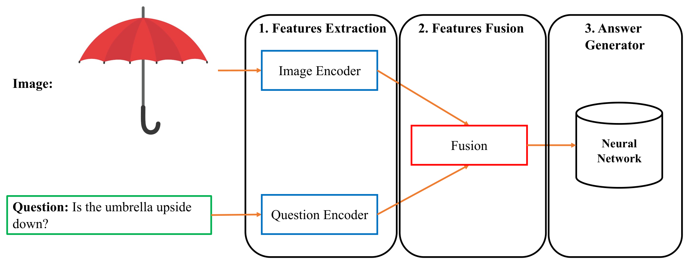
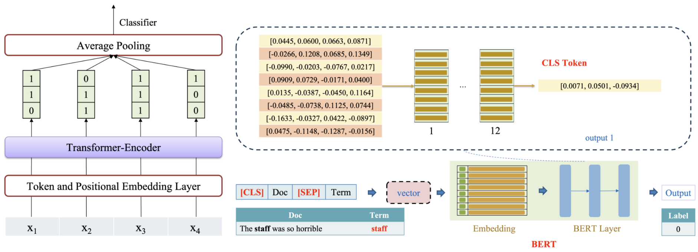
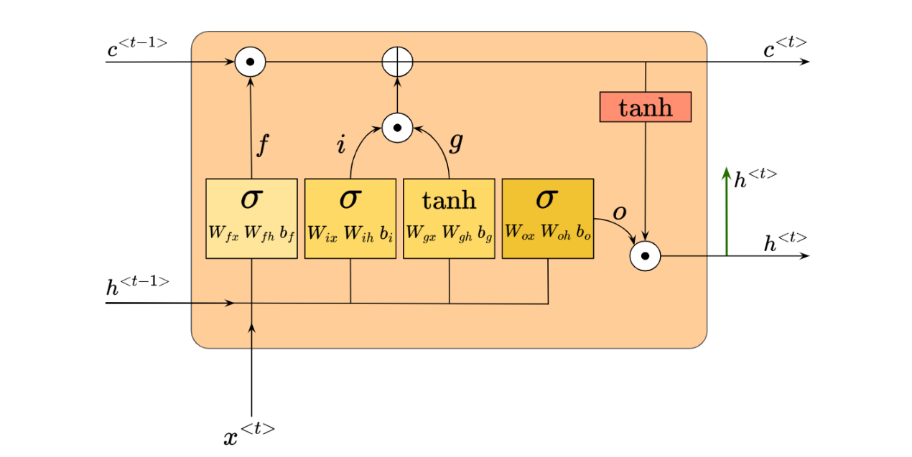
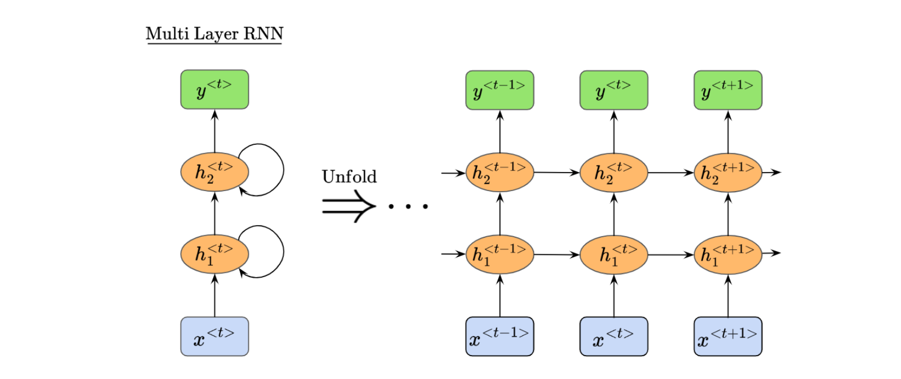
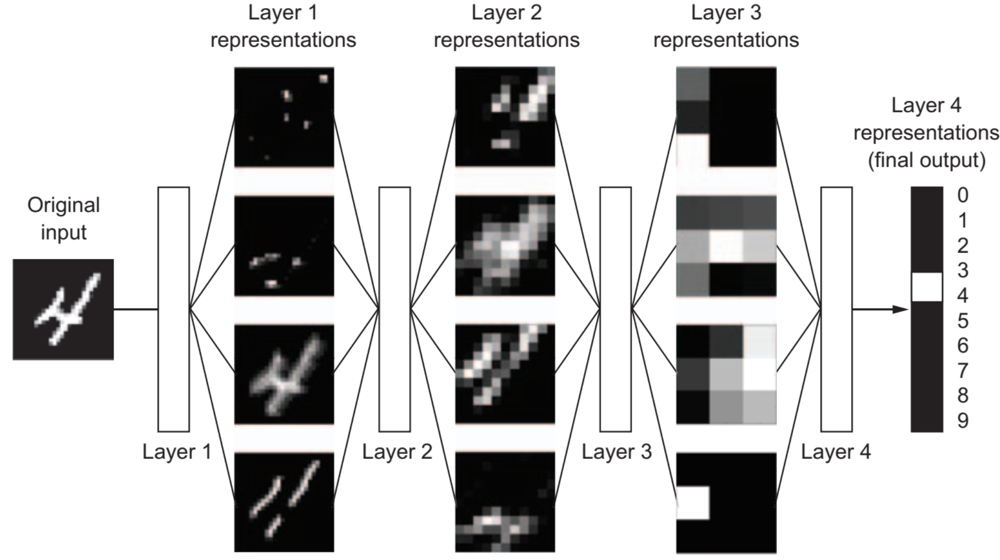

Building a Vision Transformer (ViT) from Scratch
In this project, I build a Vision Transformer for image classification.

In this project, I build a Vision Transformer for image classification.
In this project, I build the basic self-attention mechanism used in large language models to calculate attention weights for an input sentence.

Exploring how Stable Diffusion generates images in latent space through forward noise addition, iterative denoising, and text conditioning.

Combining computer vision and natural language generation to automatically describe the contents of an image.

Building and benchmarking Visual Question Answering models from MLP and CNN+BiLSTM to fine-tuned ViT+BERT, fusion ablations, debiasing, and 4-bit LLaVA inference.

An introduction to fine-grained sentiment analysis for identifying aspect terms and predicting sentiment polarity.

In this project, I build a LSTM-based model using PyTorch and some math, then compare its sentence-generation performance with an RNN model.

In this project, I build a RNN using only NumPy and some math, and it will be used to generate text.

In this project, I build an image-classification neural network using only NumPy and mathematics.
